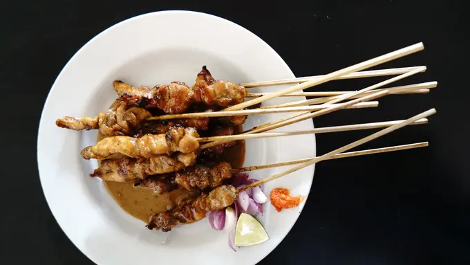

Sate

Description
Sate adalah makanan yang terbuat dari daging yang dipotong kecil-kecil dan
ditusuk sedemikian rupa dengan tusukan lidi tulang daun kelapa atau bambu,
kemudian dipanggang menggunakan bara arang kayu. Sate disajikan dengan
berbagai macam bumbu yang bergantung pada variasi resep sate.
Ingridients
- 300 gr daging dada ayam
- 100 gr kacang tanah
- 200 ml air
- 3 sdm kecap manis
- 1 buah jeruk nipis
- garam secukupnya
Steps
-
Potong dadu dada ayam. Lumuri dengan jeruk nipis dan sedikit garam.
Biarkan sebentar, tusuk-tusuk ke tusuk sate.
-
Sangrai kacang tanah hingga matang. Angkat. Ulek halus kacang tanah.
-
Tumis bumbu halus dengan minyak secukupnya hingga matang. Tuang 100 ml
air atau secukupnya. Masak hingga mendidih.
-
Masukkan kacang tanag halus, campurkan dengan bumbu halus. Tuang kecap
manis dan sedikit garam. Tes rasa, jika sudah sesuai selera, angkat.
-
Ambil 2-3 sdm bumbu kacang, jadikan bumbu rendam untuk sate. Biarkan
selama kurang lebih 1 jam sambil memanaskan panggangan.
-
Panggang sate hingga matang sambil sesekali dioles bumbu rendam. Angkat.
-
Sajikan sate ayam dengan bumbu kacang dengan lontong dan taburan irisan
bawang merah.